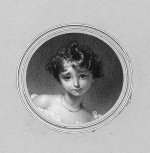

Image by Cool Text: Logo and Button Generator - Create Your Own Logo

A história de Ada começa muito antes do seu nascimento. O seu pai, Lord Byron, um poeta e escritor amplamente respeitado, possuía pouca afeição para números e lógica, e frequentemente se envolvia em relações extramatrimoniais. Ada é a única filha legítima do Lorde. A mãe de Ada, querendo impedir a possibilidade da filha seguir o mesmo caminho do pai, a criou com uma educação forte em matemática, e Ada teve como professores diversos acadêmicos famosos da época, estudando, além da matemática, linguas, literatura e geografia.